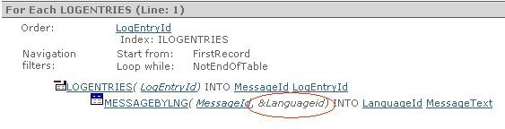

Filters in a For Each group or Grid conditions can be used to improve navigation between different tables and simplify the code to be written. Since it is more intuitive, it further isolates the developer from the database structure enabling to resolve queries more intuitively while getting the results faster and more efficiently. Consider the following example, where we have Log Entries in our database. Each Log has an associated Message that could be translated into many Languages: MessagesByLanguage Transaction MessageId* LanguageId* MessageText LogEntries Transaction LogEntryId* MessageId We want a report showing LogEntryId, MessageId and MessageText, in a given language. For example: Language = English
Language = Español
If we refer all these attributes in only one For Each group or Grid, we will get an error saying that there is no relation between them. This is the expected behavior, because each Log Entry doesn't have a one MessageText (in this case the two tables are not related. Also if they were related in a 1-N relation the problem is the same). The situation is different if we indicate a specific language for this query, for example LanguageId = "ENG" or LanguageId = &LanguageId. In this case, the relation between these two tables can be resolved thanks to the improvement in filters to determine the navigation. With the new filter, both tables look as if they belong to the same extended table (now LogEntry has only one Message), and thus the query can be resolved in one step. Advantages: More intuitive query design. In older GeneXus versions, the code necessary to resolve the above query was as follows: For Each defined by LogEntryId, MessageId For Each where LanguageId = &LanguageId defined by MessageText EndFor Endfor Now the code is as follows: For Each where LanguageId = &LanguageId defined by LogEntryId, MessageId, MessageText Endfor It generates more efficient SQL code. The query is resolved with only one SQL sentence with a join between the tables instead of using two Select statements. Developers need less knowledge of the database structure and relationships. ConsiderationsFilters must be specified in the For Each "Where" clause or in Grid Conditions. General Conditions of Reports, Procedures, Work Panels and Web Panels do not support this feature (General Conditions may not apply to all groups). The condition to which the filters belong cannot have either "NOT" or "OR" operators. Also, the filter can only be compared with the "=" operator. In other cases, the filter cannot be applied. For example, "LanguageId = &LanguageId and LogEntryId > &LogEntryIdStart" is a valid condition to instantiate LanguageId, but "LanguageId = &LanguageId OR LogEntryId > &LogEntryIdStart" is invalid. The navigation diagram below displays the tables accessed through this feature, showing a value used to this end (&LanguageId in the example).  This feature is supported only for generators that access the database via SQL. ScopeObjects: Procedures, Web Panels, Work Panels,
|
| Backlinks | |
| Multiple Base Transactions in a For Each command | Where clause |